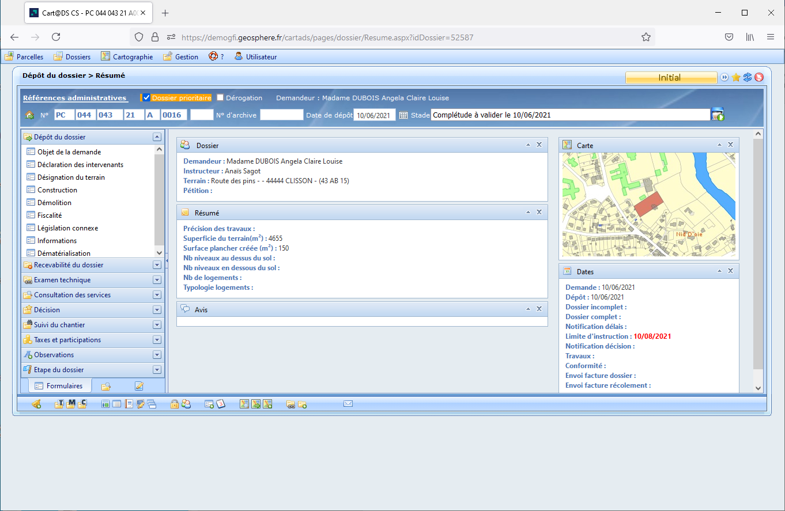
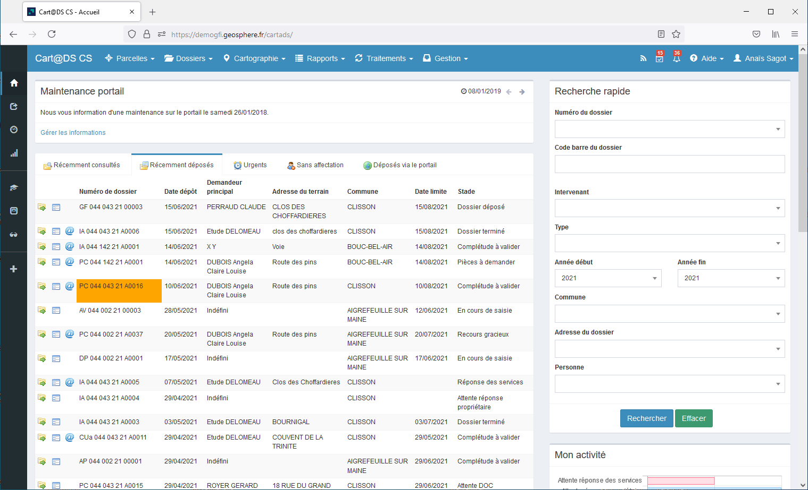
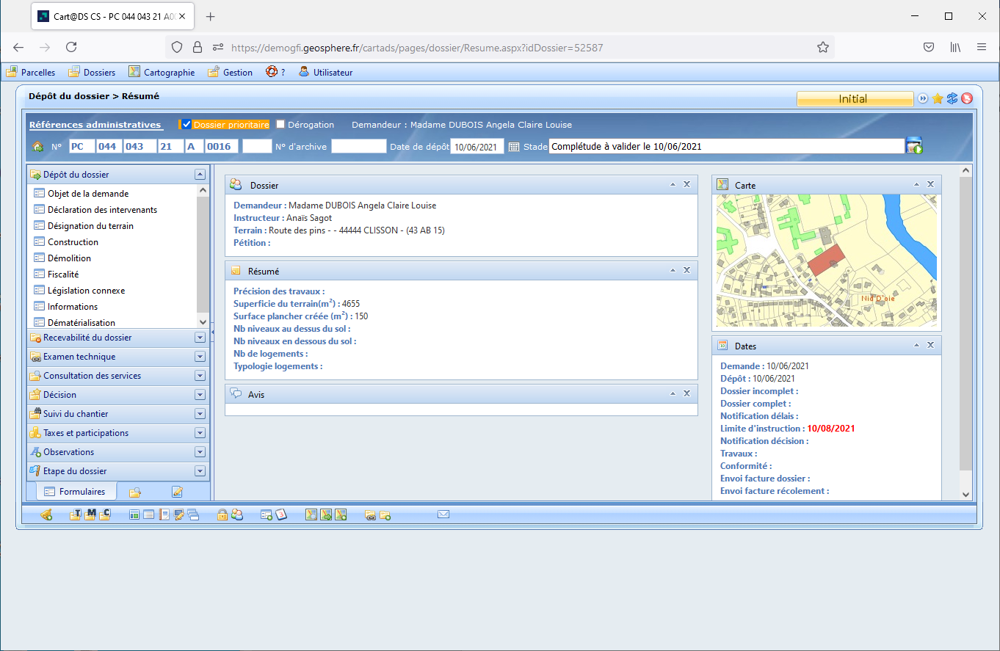
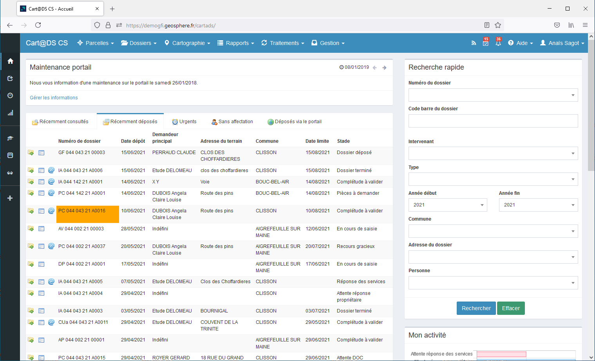

Urbanisme Connecté : L'Harmonie Cart@DS & PLAT'AU à la Mairie de Montrouge
 



Cart@DS & PLAT'AU
- Categorie: Quand Deux Mondes Numériques Fusionnent pour Réinventer l'Autorisation d'Urbanisme
- Pour: : Mairie de montrouge
- Projet URL: https://https://logiciels-secteurpublic.inetum.com/sp/wp-content/uploads/2019/12/Plaquette-cartads.pdf
- Categorie: Quand Deux Mondes Numériques Fusionnent pour Réinventer l'Autorisation d'Urbanisme
- Pour: : Mairie de montrouge
- Projet URL: https://https://logiciels-secteurpublic.inetum.com/sp/wp-content/uploads/2019/12/Plaquette-cartads.pdf
Introduction
Bienvenue dans le cœur numérique de la Mairie de Montrouge, où l'innovation et l'efficacité se rencontrent pour faciliter la gestion des autorisations d'urbanisme. Notre projet phare a été la fusion stratégique entre deux puissants logiciels, Cart@DS et PLAT'AU, une initiative conçue pour transformer la manière dont nous traitons et gérons les demandes au sein de notre municipalité.
Cart@DS : L'Architecte Numérique de l'Urbanisme
Cart@DS est bien plus qu'un simple logiciel d'urbanisme. C'est notre architecte numérique dédié à la gestion des autorisations d'urbanisme. Grâce à ses fonctionnalités avancées, il offre une interface intuitive pour les usagers et simplifie le processus de dépôt des demandes en ligne. Mais pourquoi s'arrêter là ?
PLAT'AU : La Synchronisation au Service de l'Efficacité
Nous avons repoussé les limites en greffant le plateau de PLAT'AU à Cart@DS. PLAT'AU, la plateforme de consultation des services de l'État, est devenue le maillon essentiel pour synchroniser nos services métiers. Cette synchronisation, méticuleusement mise en œuvre, a été la clé de voûte de notre initiative.
La Synchronisation : Un Pont entre Deux Mondes Numériques
En unissant Cart@DS et PLAT'AU, nous avons établi un pont numérique entre les demandeurs et les services de l'État. Cette synchronisation a ouvert des canaux fluides d'échanges d'informations, permettant une gestion plus transparente et rapide des autorisations d'urbanisme. Mais quels sont les avantages concrets ?
Les Bénéfices Concrets pour Nos Services Métiers
Cette synchronisation a permis une coordination sans faille entre les services de la Mairie de Montrouge et les instances gouvernementales. L'élimination des étapes de ressaisie, source potentielle d'erreurs, a grandement amélioré la qualité des dossiers transmis aux services instructeurs. La traçabilité accrue, la coordination facilitée entre les différents services, et la réduction des tâches à faible valeur ajoutée ont libéré nos équipes pour se concentrer sur des missions d'animation, d'ingénierie et de conseil.
Grandes Lignes du Projet : De la Vision à la Réalité
Dans les lignes qui suivent, nous explorerons les étapes cruciales de la mise en œuvre de ce projet révolutionnaire à la Mairie de Montrouge. Découvrez comment nous avons conçu, déployé et optimisé cette synchronisation pour redéfinir les normes de l'urbanisme numérique au service de notre communauté.